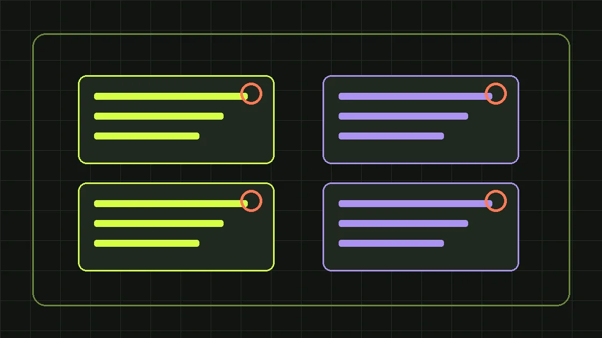

Когда реклама не приносит ожидаемого результата, причина не всегда находится в рекламном кабинете. Объявление может получать клики, но вести на неподходящую страницу. Заявки могут приходить, но теряться в CRM. Продажи могут происходить позже, чем заканчивается отчётный период. Правильная диагностика начинается с разделения проблемы на этапы: показ → переход → действие на сайте → квалификация обращения → коммерческое предложение → продажа. Ниже — двенадцать распространённых причин и порядок проверки без хаотичного изменения всех настроек сразу.
Сначала уточните, что именно означает «не работает»
Фраза «реклама не работает» может означать разные ситуации: нет показов, слишком дорогой трафик, есть клики без заявок, много нецелевых обращений или нет продаж при нормальном количестве лидов. Для каждой ситуации нужен свой набор проверок. Если показов нет, бессмысленно сначала переписывать форму на сайте. Если переходы есть, но часть конверсий не фиксируется, нельзя достоверно оценить объявление без проверки аналитики. Если лиды качественные, но менеджеры не доходят до звонка, проблема частично находится в процессах продаж. Сформулируйте симптом в числах, укажите период и сравниваемый показатель, а только затем ищите причины.
Причина 1. Не согласовано целевое действие
В проекте могут одновременно оптимизировать клики, отправки форм, звонки и покупки. Но если бизнесу нужны квалифицированные обращения, а рекламная система обучается на любой отправке короткой формы, она может находить аудиторию, которой проще заполнить форму, а не купить. Согласуйте список целей: основная цель — целевой лид или коммерческое действие; вспомогательные — просмотр страницы, нажатие кнопки, скачивание материала. Не складывайте их в одну метрику и не называйте каждую «заявкой». Зафиксируйте, на каком этапе CRM подтверждает качество и как эти данные попадают обратно в аналитику. Иначе показатель «стоимость лида» будет выглядеть точным, но сравнивать кампании по нему окажется опасно.
Причина 2. Сломаны цели и отслеживание заявок
На сайте могут запускаться события при клике на кнопку, хотя форма не отправилась. Или цель срабатывает при открытии страницы благодарности, доступной напрямую. Звонки могут терять источник, а сообщения в мессенджере — не связываться с рекламной кампанией. Проверьте путь тестового пользователя: загрузка страницы, форма, реальное принятие заявки сервером, появление записи в CRM и фиксация события в аналитике. Для ошибки формы событие успешной заявки срабатывать не должно. Отдельно проверьте дубли, блокировщики, перенаправления и согласие пользователя. На этапе теста полезен журнал технических событий без хранения лишних персональных данных. Только после этого статистика становится пригодной для принятия решений.
Причина 3. Объявление обещает не то, что предлагает страница
Человек ищет конкретную услугу, видит подходящее объявление, но попадает на общую главную с десятками направлений. Ему приходится искать нужное предложение заново. Или в объявлении указана низкая цена, а на странице условия существенно сложнее. Проверьте смысловую связку «запрос — объявление — посадочная»: совпадают ли продукт, география, сроки, комплектность и действие? Первый экран должен сразу подтверждать, что человек попал туда, куда ожидал. Для сложных B2B-продуктов хорошо работают наглядный состав услуги, этапы, технические ограничения, реальные примеры и предложение получить расчёт. Сделайте отдельный путь для каждой важной группы намерений, не обязательно создавая десятки похожих сайтов.
Причина 4. Выбрана слишком широкая аудитория
Низкое качество трафика часто связано с попыткой охватить всех. Поиск может собирать информационные и учебные запросы вместо коммерческих; таргетированная реклама — не учитывать должность, потребность и географию покупателя. Соберите реальные обращения из CRM и сравните признаки целевых и нецелевых клиентов. Для поисковой рекламы разделите основные коммерческие намерения и явно нерелевантные формулировки; для социальных каналов уточните сегменты и офферы. Важно не пытаться угадать идеальную аудиторию исключительно по интересам — качество надо подтверждать дальнейшим поведением. Даже узкая аудитория не даст результата, если предложение ей не нужно или его экономика не сходится.
Причина 5. Слабое предложение, а не слабая настройка
Покупатель сравнивает не только объявления, но и условия сотрудничества. Если предложение не отвечает на базовые вопросы — что входит, когда будет результат, кто выполняет работу, что считается результатом и сколько это стоит, — клики не превращаются в решения. Посмотрите записи вопросов менеджерам, переписки, причины отказов и предложения конкурентов. Составьте ясное ценностное предложение для конкретного клиента. Не обещайте «гарантированные продажи» и произвольный рост, если не контролируете продукт, сервис и работу отдела продаж. Тестируйте конкретику: аудит, демонстрацию решения, расчёт под объект, сравнение вариантов, план первых работ. Рекламная система не способна заменить слабую коммерческую модель.
Причина 6. Посадочная неудобна на телефоне
Для части аудитории сайт открывается преимущественно с мобильного устройства, и даже небольшой технический сбой ухудшает опыт. Проверьте размер текста, доступность кнопки, удобство формы, поля телефона, читаемость таблиц и скорость загрузки. Особенно часто проблемы проявляются в тяжёлых изображениях, всплывающих элементах и формах с конфликтующими масками. Пройдите путь пользователя на реальном телефоне: от объявления до подтверждённой заявки. Не ориентируйтесь только на скриншот десктопа. Если продукт B2B и покупатель позже продолжит работу на компьютере, тем важнее сделать первый мобильный контакт простым и сохранить возможность вернуться к нужной информации.
Причина 7. Бюджет слишком мал для проверки гипотезы
Иногда кампания оценивается по трём-четырём кликам и одной заявке. Это слишком мало, чтобы различать случайные колебания и устойчивый результат. До запуска прикиньте ожидаемый диапазон CPC и конверсии посадочной, затем оцените, сколько обращений может принести бюджет. Не используйте такой расчёт как обещание результата: это сценарий, который нужно сверять с фактом. Если объём данных невелик, сократите количество параллельных гипотез и сфокусируйтесь на одной группе запросов или одном сегменте. Не меняйте ставки и креативы каждый день без причины: после серии одновременных изменений вы не поймёте, что повлияло на показатели.
Причина 8. Сезонность и длинный цикл сделки
В промышленном B2B один цикл закупки может охватывать несколько согласований и бюджетных периодов. Кампания, запущенная недавно, может ещё не иметь оплаченных сделок, но уже давать качественные контакты и запросы на расчёт. Сравнивайте периоды с учётом сезонности и доступного количества данных. Не называйте все заявки из текущего месяца неэффективными только потому, что пока нет оплат. Нужны промежуточные коммерческие показатели: подтверждённые контакты, встречи, спецификации, предложения, переговоры. При этом отсутствие продаж нельзя бесконечно объяснять «долгим циклом» — у каждой гипотезы должны быть срок проверки и критерий остановки.
Причина 9. Сотрудники не успевают обработать обращения
Реклама может создавать спрос быстрее, чем менеджеры способны отвечать. Проверьте время первого ответа, неотвеченные звонки, потерянные сообщения, повторные обращения и распределение ответственности. Запросите у отдела продаж данные не только о сделках, но и о причинах отсутствия контакта. Если новая заявка попадает в общий почтовый ящик и ждёт ответа несколько дней, увеличение бюджета чаще увеличит потери. Нужны уведомления, понятный маршрут заявки, резервный сотрудник и единые статусы. Этот блок относится к управлению продажами и CRM, но напрямую определяет эффективность вложений в рекламный трафик.
Причина 10. Кампании сравнивают по разным правилам
По одному каналу считают клики, по другому — лиды, по третьему — фактическую выручку. Такое сравнение ничего не говорит о правильном распределении бюджета. Выберите одинаковый период, единое определение целевого лида и прозрачную модель учёта расходов. Если для канала требуется создание посадочной или отдельные креативы, отметьте эти затраты. Отделите доход по закрытым сделкам от прогнозной суммы предложений. Для сравнения CPL используйте одинаковые правила фильтрации дублей и нецелевых запросов. Если данные неполные, честно обозначьте диапазон неопределённости вместо выдачи предположения за точную окупаемость.
Причина 11. Игнорируется реальная экономика продукта
Даже качественный трафик может оказаться нерентабельным, если маржа сделки мала, а обслуживание клиента дорого. Возьмём условный пример: 100 000 ₽ расходов, 50 целевых лидов и 5 оплаченных сделок. Стоимость целевого лида — 2 000 ₽, стоимость привлечения одной сделки — 20 000 ₽ без учёта дополнительных затрат. Эти цифры ещё не отвечают на вопрос о выгоде: нужно знать валовую прибыль от сделок, возвраты, обслуживание и повторные покупки. Если валовая прибыль на один заказ существенно меньше стоимости привлечения, канал потребует изменения или отказа. Если клиент приносит повторные покупки, расчёт может быть иным, но будущую прибыль нельзя автоматически считать гарантированной.
Причина 12. Нет системы тестирования и документирования
Когда подрядчик ежедневно меняет кампании без журнала, невозможно понять, какой эксперимент сработал. Для каждой гипотезы зафиксируйте исходную проблему, запланированное действие, период, основную метрику и условия сравнения. Например: «Запросы на расчёт среди производственных компаний могут вырасти после уточнения комплектации на посадочной». Выберите один значимый элемент, измените его и наблюдайте результат. Если одновременно поменялись целевая страница, аудитория, цены и работа менеджеров, сделайте вывод осторожным. Полезнее накопить три хорошо документированных теста, чем получить десяток красивых графиков без причинно-следственной логики.
В каком порядке проверять рекламную кампанию
Первым шагом проверьте достоверность измерений: события, дубли, CRM и реальные обращения. Вторым — сопоставьте спрос и предложение: запросы, аудитории, объявление, страницу. Третьим — оцените технические ограничения: скорость, форму, доступность контактов. Четвёртым — обратную связь продаж, качество лидов и время ответа. Пятым — коммерческую экономику и достаточность данных. Составьте список проблем с вероятной причиной и стоимостью исправления. Начинайте с ошибок, которые делают остальные измерения недостоверными. Пока цели работают неправильно, даже идеальная оптимизация ставок не позволит доказать пользу рекламы.
Диагностика Яндекс.Директа: практический чек-лист
Сверьте географию показов, доступные бюджеты, поисковые фразы, минус-фразы и соответствие объявлений посадочным страницам. Проверьте распределение между поиском и сетями, чтобы оценивать различающиеся намерения отдельно. Сопоставьте цели Метрики с настоящими заявками в CRM. Посмотрите, какие группы запросов приносят целевые обращения, а какие — только переходы. Не отключайте объявления только из-за высоких кликов по одному дню. Если система использует автоматические стратегии, убедитесь, что она получает достаточно качественных и правильно настроенных конверсий. Отдельно проверьте изменения на сайте: иногда падение результатов совпадает с редизайном формы или изменением обработки сообщений, а не с настройками Директа.
Диагностика VK Рекламы: практический чек-лист
Начните с цели кампании, выбранного события оптимизации и того, что обещают креативы. Просмотрите реальные заявки и определите, соответствуют ли они целевой аудитории. Если много контактов с низким намерением, попробуйте иной оффер или этап квалификации, а не только более узкие интересы. Сравните формы заявок и переходы на сайт по качеству последующих коммерческих шагов. Учитывайте, что формат платформы и отдельные настройки могут меняться: при запуске проверяйте актуальный интерфейс и документацию. Главное правило остаётся прежним — оценивать не дешёвый контакт в кабинете, а способность этого контакта двигаться по воронке продаж.
Недельный план исправлений без хаоса
День 1: тестовая заявка, проверка счётчика и CRM. День 2: анализ нецелевых обращений и разговор с менеджерами. День 3: проверка поисковых запросов, аудиторий и объявлений. День 4: просмотр посадочной на телефоне и компьютере, фиксация явных ошибок. День 5: формирование двух-трёх гипотез с метриками и ограниченным бюджетом. Дни 6–7: запуск исправлений и проверка технической корректности. Не следует обещать, что семь дней достаточно для улучшения продаж: этот план нужен, чтобы восстановить измеримость и подготовить осмысленные эксперименты. При длинном цикле сделки выводы по прибыли появятся существенно позже.
Что требовать от итогового отчёта подрядчика
Хороший отчёт показывает, какие изменения были сделаны, почему их сделали и что изменилось после. Он содержит понятные определения всех показателей, расходы, число обращений и целевых лидов, качество обработки, результаты экспериментов и следующие шаги. Если итоговый вывод звучит только как «CTR вырос на 20%», уточните, изменилась ли стоимость целевого обращения и есть ли данные о дальнейшем движении клиента. Просите отделять реальную выручку от потенциальной суммы сделок. Рекламная аналитика должна помогать принимать решения, а не только демонстрировать активность специалиста.
Итог: лечите причину, а не график в рекламном кабинете
Причина отсутствия результата может находиться в аудитории, оффере, аналитике, сайте, бюджете или продажах. Начинайте с точки, где данные перестают совпадать с реальностью, и исправляйте её до масштабирования. Если нужен системный аудит и настройка, посмотрите услугу ведения рекламы и маркетинг под ключ. Окончательное решение об изменении бюджета принимайте на основе реальной экономики и качества лидов, а не одной метрики из кабинета.
Этот материал находится на согласовании и не индексируется поисковиками, пока редактор не подтвердит факты и источники.
Сделаем план под вашу ситуацию
Обсудим задачи бизнеса и бюджет первых тестов.
Получить маркетинговый план ↗